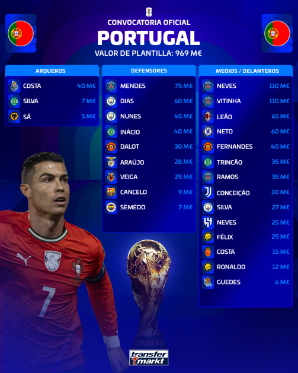
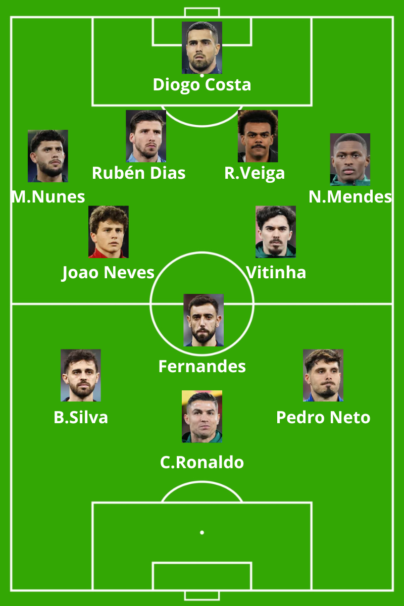

Estructura: 1-4-2-3-1

Portugal cuenta con uno de los centros del campo más completos y talentosos de la competición. No solo dispone de futbolistas con una enorme capacidad creativa en la base de la jugada, como João Neves y Vitinha, sino también de jugadores capaces de marcar diferencias en zonas intermedias y en el último tercio, como Bernardo Silva y Bruno Fernandes, quienes pueden desempeñarse como mediapuntas con gran impacto en la generación de ocasiones.
Por las características de sus futbolistas, es una selección que presenta una gran riqueza táctica y una elevada capacidad para intercambiar posiciones de manera constante. Será habitual ver centrocampistas ocupando momentáneamente posiciones de extremo o lateral, generando superioridades y dificultando las referencias defensivas del rival. En contraste, Cristiano Ronaldo será la pieza más fija dentro de la estructura ofensiva. Actuará como delantero centro de referencia, centrado en fijar a los centrales y en aprovechar las ocasiones generadas por el talento creativo que le rodea.
Nuno Mendes será otra de las figuras clave del equipo. Considerado por muchos como el mejor lateral izquierdo del mundo en la actualidad, destaca no solo por su capacidad para aportar amplitud y profundidad, sino también por su habilidad para atacar desde carriles interiores. Su rendimiento reciente con el Paris Saint-Germain ha demostrado su capacidad para generar ventajas en contextos de alto nivel competitivo, convirtiéndose en un recurso ofensivo de enorme valor para Portugal.
Aunque Portugal todavía no ha logrado conquistar una Copa del Mundo, posee una de las plantillas más equilibradas y completas del torneo. La calidad de su centro del campo, la versatilidad de sus jugadores y el talento diferencial de sus principales figuras la sitúan, a mi juicio, entre las cinco grandes favoritas para alzarse con el Mundial 2026.